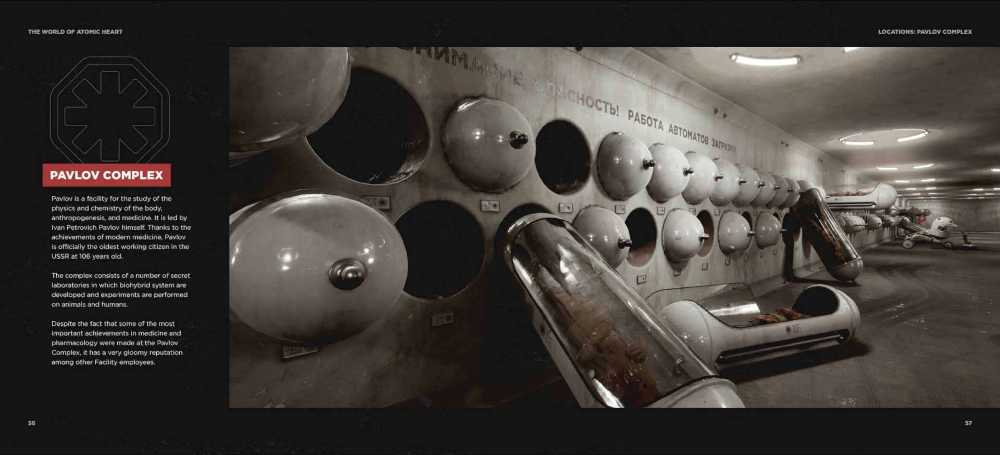
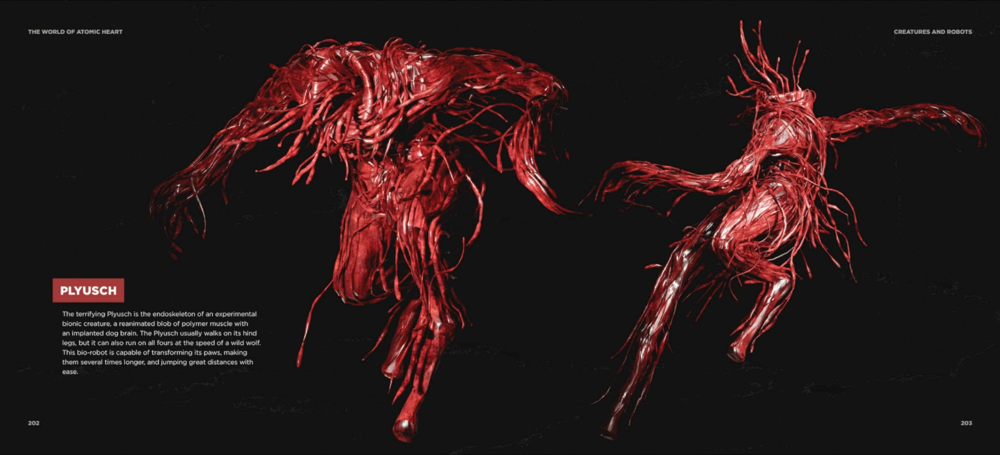
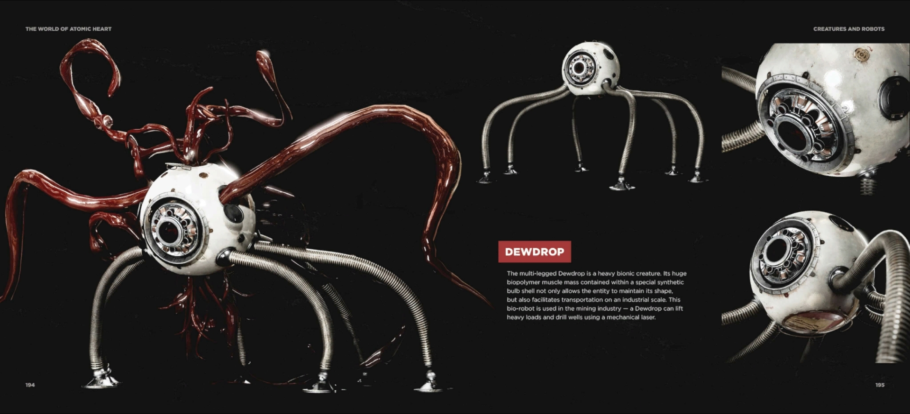
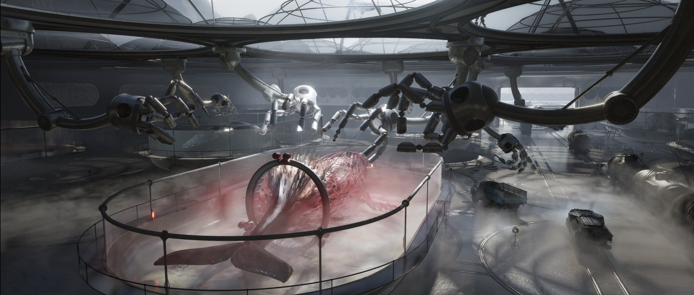
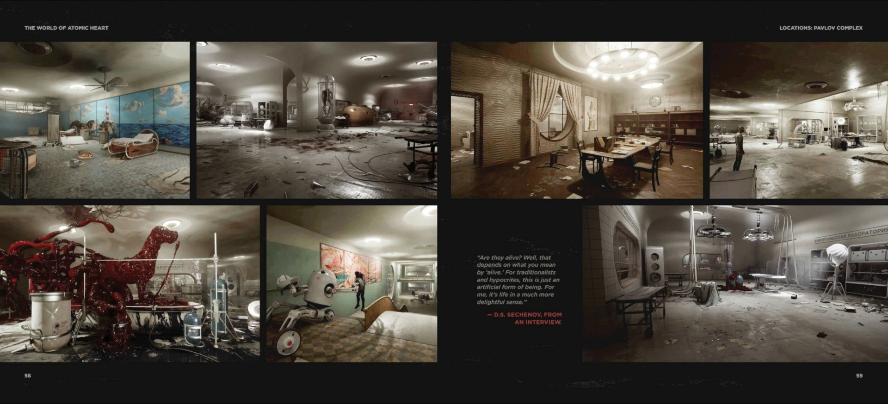
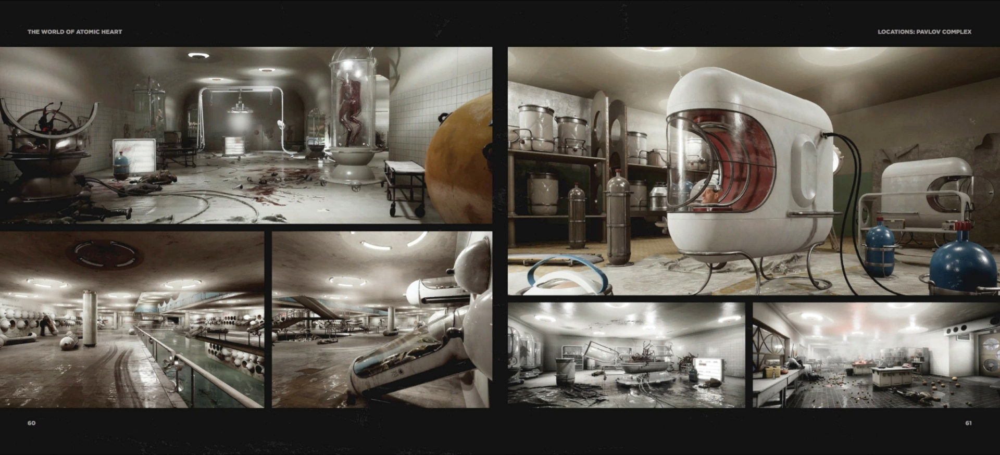
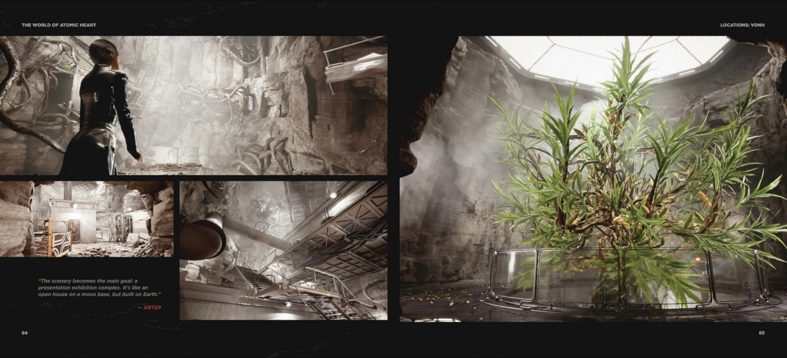
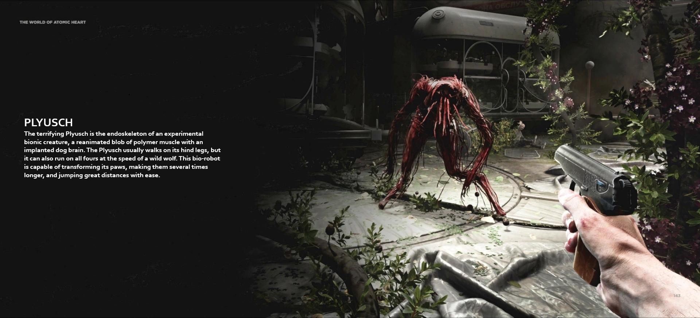
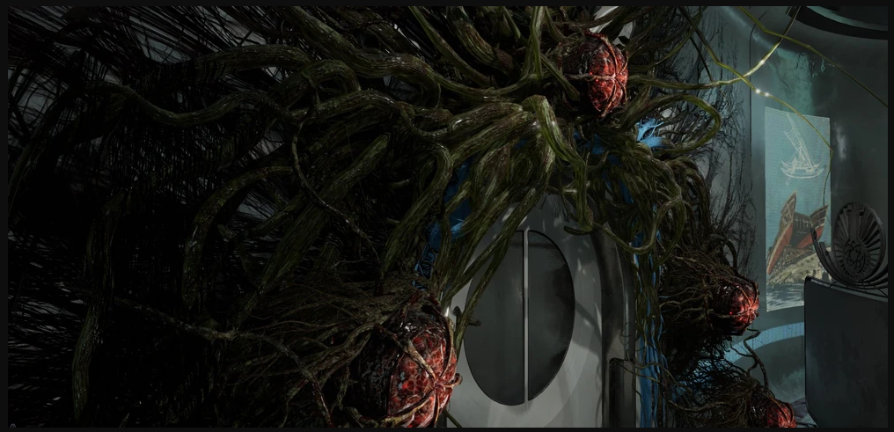
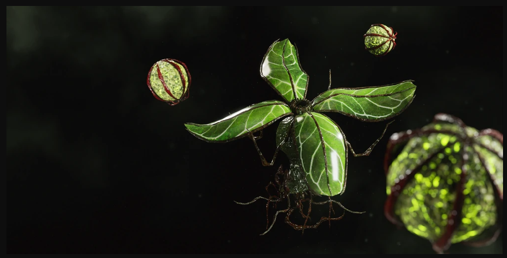

Atomic Heart
Pavlov Complex / Organic Production Assets
Organic and biomechanical assets, polymer forms, biomass, props, material refinement, technical cleanup and Unreal Engine preparation.
Senior 3D Artist / Technical 3D Artist
Production-ready 3D assets for games with a focus on organic forms, biomechanical structures, mutated surfaces, materials, props, environment elements, and Unreal Engine preparation.
About
My main strength is the ability to observe real-world structures and transform them into original 3D design. I study stone layers, leaf veins, roots, sand patterns, erosion, hard natural surfaces, biological forms, vascular systems, and organic growth, then translate them into silhouettes, surface details, material logic, and production assets.
I started learning digital graphics around the age of 16, moving through Alias Maya, early 3ds Max, digital drawing, Winamp-era visual experiments, and later professional game production workflows.
Selected Work

Atomic Heart
Organic and biomechanical assets, polymer forms, biomass, props, material refinement, technical cleanup and Unreal Engine preparation.

Organic Forms
Organic, blood-like, vascular and mutated forms designed for real-time game production.

Creature Elements
Creature-related asset work combining organic anatomy, synthetic structures and readable silhouettes.

Large Scale Asset
Large organic forms require a clear visual hierarchy: primary silhouette, internal structure, secondary branching, surface rhythm, material contrast, and optimization for real-time use.
Gallery






Skills
Modeling, sculpting, retopology, UV cleanup, baking support, texturing, material setup, optimization, LODs, collisions, lightmaps and final asset validation.
Organic forms, roots, vascular structures, polymer surfaces, mutated materials, creature-related assets, biomechanical shapes and biological surface logic.
Observation of real-world forms translated into original 3D design: lines, silhouettes, surface rhythm, detail distribution, material behavior and believable structure.
Asset preparation for Unreal Engine, material setup, Blueprint/prefab-style scene assembly, optimization, collisions, LODs, lightmaps and final engine validation.
Contact